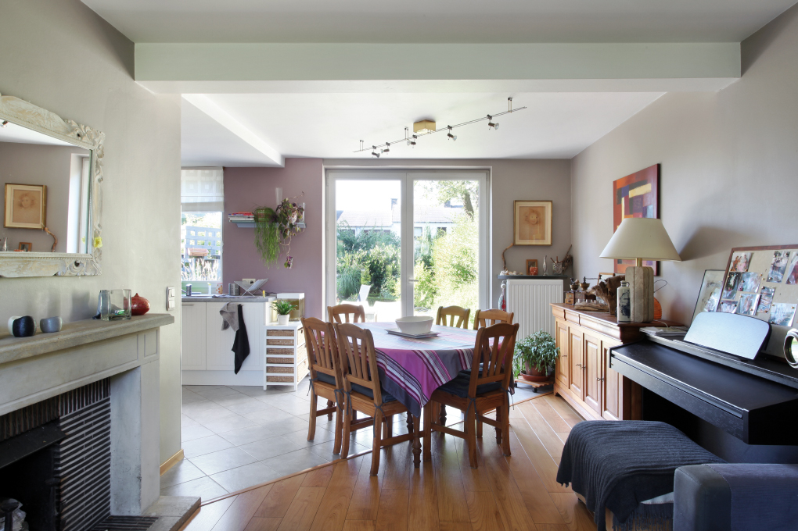
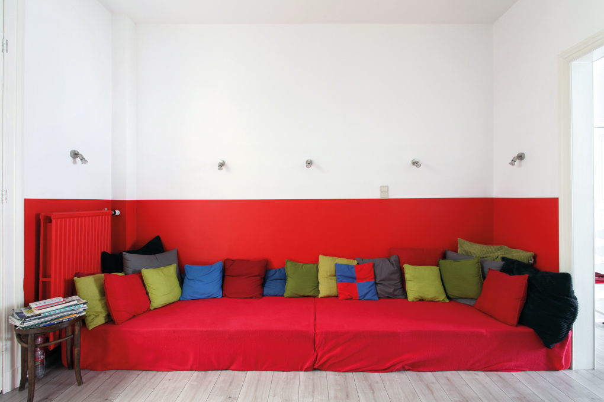
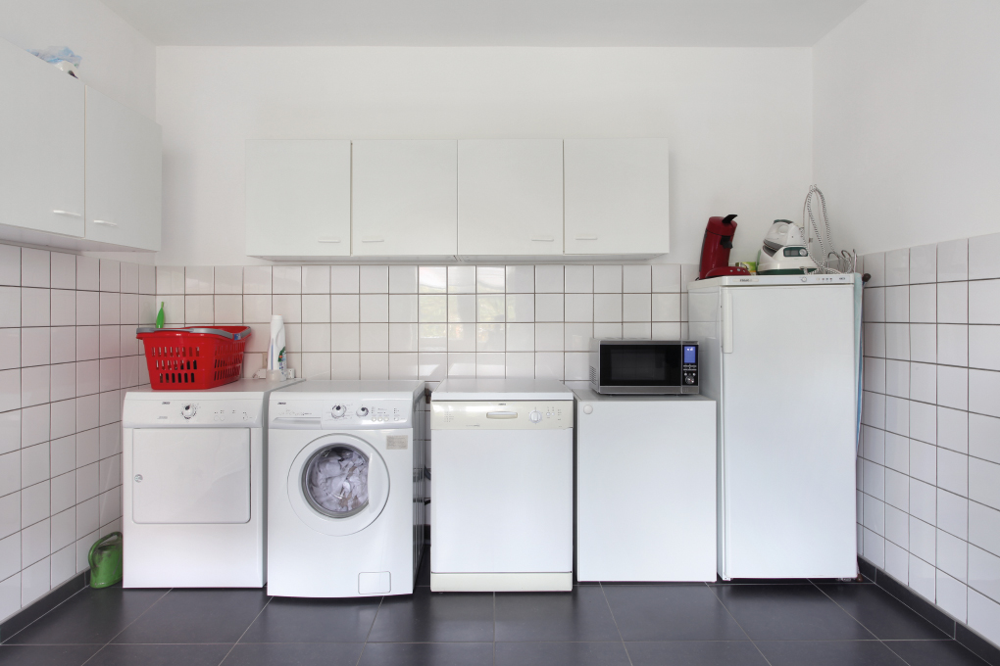

024, semi-detached house, owner, La Hulpe, 1973

049, row house, owner, Namur, 1930

069, apartment, owner, Auderghem / Oudergem, 1965
074, detached house, owner, Lommel, 1983

158, row house, tenant, Habay, 1971
183, apartment, tenant, Saint-Josse-ten-Noode / Sint-Joost-ten-Node, 1930